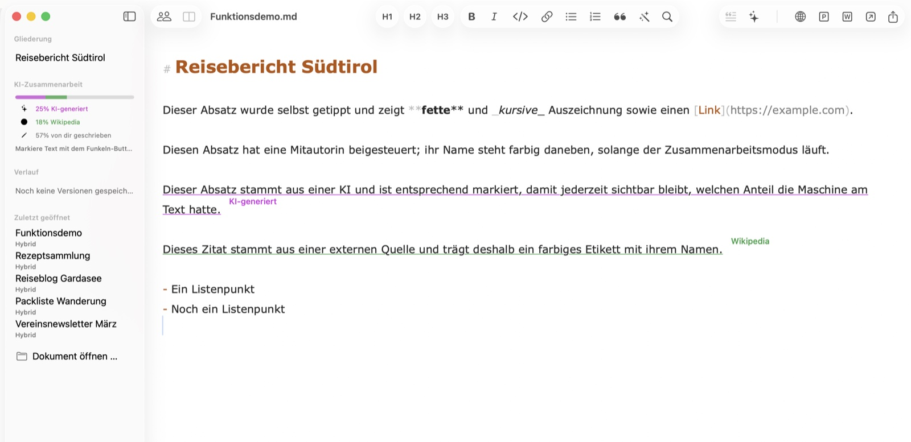
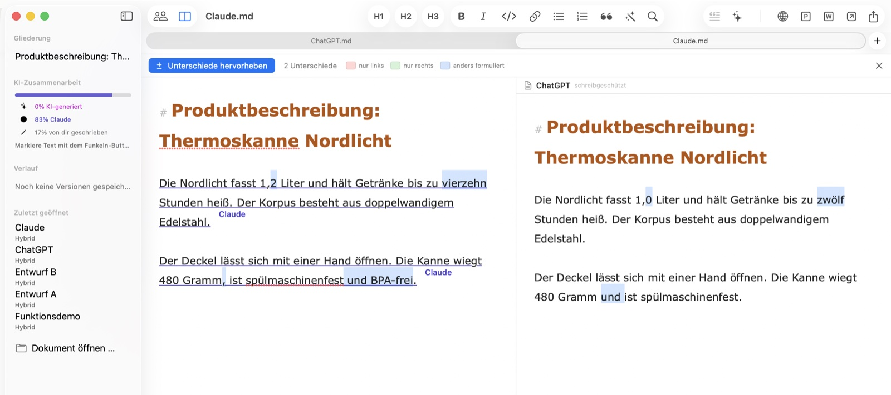
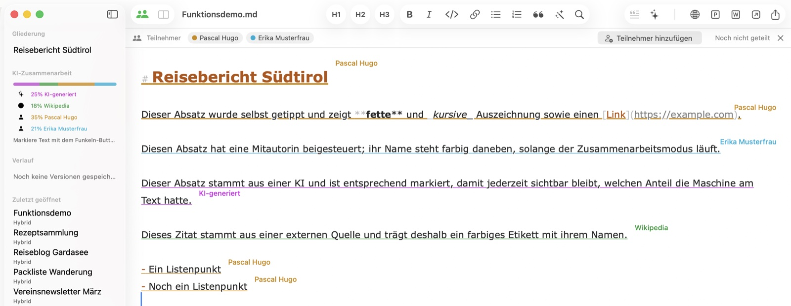
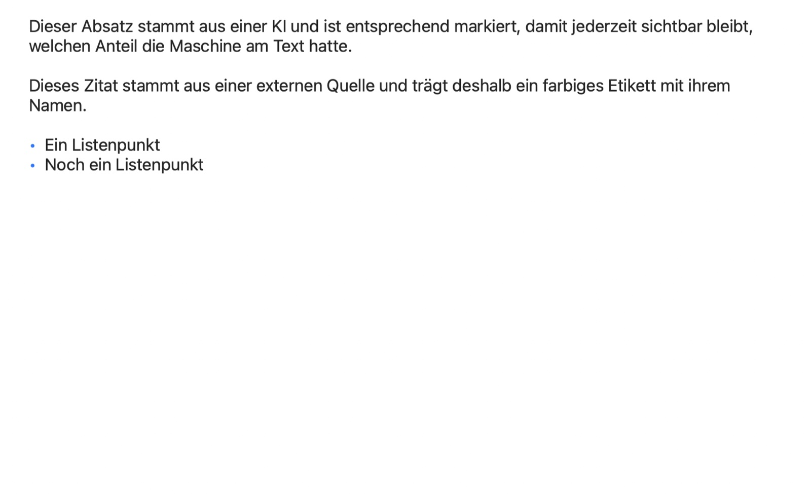

Online-Publishing mit einem Klick
Kopiert Ihr Dokument als formatiertes HTML mit eingebetteten Bildern — bereit zum Einfügen in WordPress und andere CMS. Bilder erscheinen genau an ihrer Stelle, nicht als kaputte Verweise.
Hybrid für macOS
Hybrid hält fest, woher jede Passage stammt: selbst geschrieben, von einer KI, aus einer benannten Quelle oder von einer Kollegin. Gemacht für Menschen, die veröffentlichen — in PR, Marketing, Agentur und Redaktion.
7 Tage gratis testen
Bald verfügbar Hybrid erscheint bald auch für iPhone und iPad.

Jede Passage trägt ihre Herkunft — und behält sie beim Speichern, Teilen und gemeinsamen Bearbeiten. Das Protokoll reist in einer reinen .md-Datei mit, die jeder andere Editor öffnen kann; die Etiketten schweben über dem Text und landen in keinem Export.
Dieser Absatz wurde selbst getippt — alles, was Sie schreiben, gilt automatisch als Ihres.
Diese Passage stammt aus einer KI und ist markiert, damit der Anteil der Maschine am Text sichtbar bleibt.KI-generiert
Dieses Zitat stammt aus einer externen Quelle und trägt deren Namen als kleines Etikett.Wikipedia
Die zentrale Zusage: Was jemand beigesteuert hat, bleibt ihm dauerhaft zugeschrieben — auch wenn der Zugriff später entzogen wird. Die Herkunft ist ein Protokoll darüber, wer geschrieben hat, nicht darüber, wer gerade darf.
Dieselbe Frage ging an zwei KI-Tools, und die Antworten sehen auf den ersten Blick gleich aus. Hybrid hebt hervor, worin sie sich unterscheiden, und zählt die Abweichungen. Vergeben Sie jeder Antwort den Namen ihres Tools als Quelle, bleibt auch nach dem Zusammenführen nachvollziehbar, welcher Satz von welchem stammt.

Laden Sie Teilnehmer per Link, aus den Kontakten, per Mail oder Nachrichten ein — das Dokument bleibt dabei ausschließlich in Ihrer iCloud. Eingeladene schreiben live mit: Jede Passage trägt Namen und Farbe ihres Autors, und während jemand tippt, erscheint sein Name mit pulsierenden Punkten. Exportieren oder als eigene Datei sichern können Eingeladene nicht — das Dokument gehört dem Besitzer.

Überschriften, Listen, echte Tabellen und eingebettete Bilder — gerendert so, wie Ihre Leser sie sehen werden. Die Vorschau folgt der Eingabe live, in einem eigenen Fenster oder als geteilte Ansicht direkt neben dem Editor; ideal, um einen Text zu prüfen, bevor er ins CMS geht.

Kopiert Ihr Dokument als formatiertes HTML mit eingebetteten Bildern — bereit zum Einfügen in WordPress und andere CMS. Bilder erscheinen genau an ihrer Stelle, nicht als kaputte Verweise.
Senden Sie Ihren Text mit einem Klick an ChatGPT, Claude, Perplexity oder eine App Ihrer Wahl. Markieren Sie KI-Passagen, und lesen Sie die Anteile aller Beteiligten in der Seitenleiste ab.
Dokumente sind pure .md-Dateien, die jeder Editor öffnen kann. Alles, was Hybrid zusätzlich weiß — Herkunft, Versionen, Autoren —, reist in einem einzigen unsichtbaren Kommentar mit.
Ziehen Sie ein Foto in den Text: Es wird verkleinert, umgewandelt und als Markdown-Verweis eingefügt. Aus einer CSV- oder Excel-Datei wird eine formatierte Tabelle.
Hybrid sichert beim Schreiben automatisch Zwischenstände; jeder Stand lässt sich ansehen und wiederherstellen. Der Verlauf liegt in Ihrer iCloud statt in der Datei — weitergegebene Dokumente enthalten keine Altfassungen.
Sperren Sie die App sofort oder automatisch nach Inaktivität. Gesperrt heißt gesperrt: alle Fenster verdeckt, Exporte deaktiviert — bis Touch ID wieder öffnet.
Überall, wo Text aus mehreren Händen entsteht — menschlichen und maschinellen —, hält Hybrid die Herkunft auseinander.
Pressemitteilungen mit KI-Unterstützung entwerfen und dabei den Überblick behalten, welches Zitat aus welcher Quelle stammt. Was Mensch, KI oder Quelle beigetragen haben, steht im Dokument selbst — Transparenz als Arbeitsweise, nicht als Nachtrag.
Viele Schreibende, eine Stimme. Sehen Sie die Anteile aller Beteiligten, vergleichen Sie Entwürfe nebeneinander und übergeben Sie sauberes HTML an jedes CMS — der ganze Content-Workflow auf Ihrem Mac.
Eigene Worte von Quellen und KI-Vorschlägen trennen. Benannte Quellen bleiben an jedem Absatz — durch Überarbeitungen, Versionen und gemeinsames Redigieren hindurch.
Bei Berichten, die mit KI entstehen, zählt der Überblick, was von wem stammt. Hybrid hält fest, wer — oder was — jede Passage geschrieben hat, und die Touch-ID-Sperre hält vertrauliche Entwürfe verschlossen.
Modell-Antworten nebeneinander vergleichen, den KI-Anteil eines Dokuments messen und Prompts wie Ergebnisse als sauberes Markdown ablegen — lesbar in jedem Werkzeug.
Von Markdown ins CMS mit einem Klick: formatiertes HTML mit Bildern genau dort, wo sie hingehören. Dazu Export als PDF, Word und reines Markdown.
Nach der Installation ist Hybrid 7 Tage lang kostenlos und voll nutzbar. Danach schaltet das Abo Hybrid Pro alle Funktionen frei — den Preis nennt der Mac App Store.
Voller Funktionsumfang ab dem ersten Start — ohne Konto und ohne Zahlungsdaten.
Das Abo läuft über den App Store und lässt sich dort jederzeit kündigen. Ohne Abo bleibt Hybrid ein Lesegerät: Öffnen, Lesen, Suchen und Vorschau bleiben frei.
Wer in eine Zusammenarbeit eingeladen ist, schreibt ohne eigenes Abo mit — das Abo braucht nur der Besitzer des Dokuments.
Hybrid erscheint bald für iOS. Dieselben Dokumente, dieselbe Herkunft — für unterwegs. Bis dahin liegen Ihre Dateien als reines Markdown in iCloud Drive, lesbar auf jedem Gerät.
Hybrid gibt es in neun Sprachen: Deutsch, Englisch, Französisch, Spanisch, Italienisch, Portugiesisch, Niederländisch, Japanisch und Chinesisch (vereinfacht) — und diese Seite ebenso.
Hybrid für den Mac — der Markdown-Editor für Menschen, KI und alles, was Sie veröffentlichen.
macOS 13 (Ventura) oder neuer · Apple Silicon & Intel